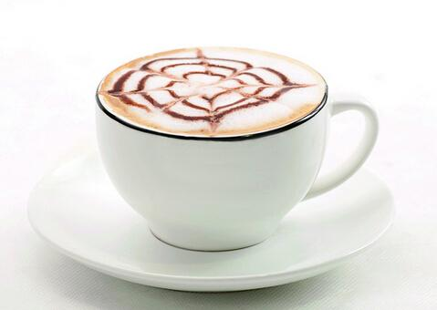
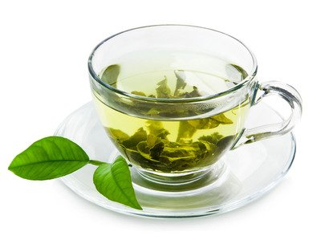
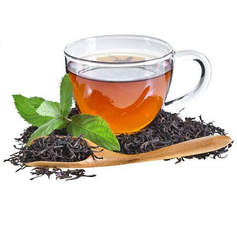
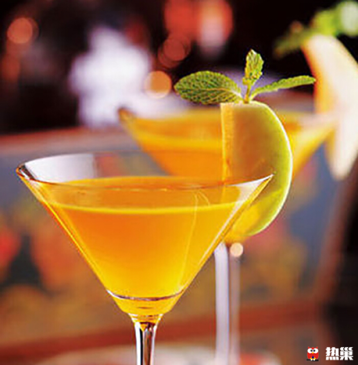
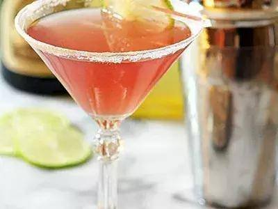

欢迎光临，一米扬光！
欢迎光临，一米扬光！
| 饮品 | 价格 |
|---|---|
| 卡布奇诺 | 20 |
| 摩卡 | 20 |
| 绿茶 | 20 |
| 红茶 | 20 |
| 螺丝起子 | 20 |
| 血腥玛丽 | 20 |
卡布奇诺
卡布奇诺是一种加入以同量的意大利特浓咖啡和蒸汽泡沫牛奶相混合的意大利咖啡。 此时咖啡的颜色，就像卡布奇诺教会的修士在深褐色的外衣上覆上一条头巾一样，咖啡因此得名。 传统的卡布奇诺咖啡是三分之一浓缩咖啡，三分之一蒸汽牛奶和三分之一泡沫牛奶，并在上面撒上小颗粒的肉桂粉末。
摩卡

摩卡咖啡(CafeMocha)是一种最古老的咖啡，其历史要追溯到咖啡的起源。 它是由意大利浓缩咖啡、巧克力酱、鲜奶油和牛奶混合而成，摩卡得名于有名的摩卡港。十五世纪，整个中东非咖啡国家向外运输业不兴盛， 也门摩卡是当时红海附近主要输出一个商港，当时咖啡主要是集中到摩卡港再向外输出的非洲咖啡，都被统称摩卡咖啡。而新兴的港口虽然代替 了摩卡港的地位，但是摩卡港时期摩卡咖啡的产地依然保留了下来，这些产地所产的咖啡豆，仍被称为摩卡咖啡豆。
绿茶

绿茶(Green Tea)，是中国的主要茶类之一，是指采取茶树的新叶或芽，未经发酵， 经杀青、整形、烘干等工艺而制作的饮品。其制成品的色泽和冲泡后的茶汤较多的保存了鲜茶叶的绿色格调。常饮绿茶能防癌，降脂和减肥，对 吸烟者也可减轻其受到的尼古丁伤害。
红茶

红茶是一种全发酵茶，是茶文化中的主要茶品。红茶的产地主要有中国、斯里兰卡、 印度、肯尼亚等地。红茶是经过采摘、萎凋、揉捻、发酵、干燥等步骤生产出来的；比绿茶多了一个发酵的过程。发酵是指茶叶在空气中氧化， 发酵作用使得茶叶中的茶多酚和单宁酸减少，产生了茶黄素、茶红素等新的成分和醇类、醛类、酮类、酯类等芳香物质。
螺丝起子

螺丝起子(screwdriver)又叫渐入佳境，有伏特加或金酒加青柠汁、柠檬、西柚或 柑橘类果汁调制的鸡尾酒。螺丝起子口感酸甜爽口、清爽，清香微苦，淡淡的酒香带来纯粹的醇香，顷刻间伴随着微微醉意。在伊朗油田工作的 美国工人以螺丝起子将伏特加及柑橘类果汁搅匀后饮用，故而取名为螺丝起子。
血腥玛丽

血腥玛丽（BloodyMary）在西方是一个十分流行的词汇。它广泛的知名度首先来自 于一种鸡尾酒，这种鸡尾酒由伏特加、番茄汁、柠檬片、芹菜根混合而制成，鲜红的蕃茄汁看起来很像鲜血，故而以此命名。血腥玛丽（BloodyMary） 这款鸡尾酒之所以火爆，是因为在西方“血腥玛丽”是年轻人中非常流行的一款通灵游戏。而在中国，平时人们去酒吧，这款鸡尾酒很少有人会去尝试。